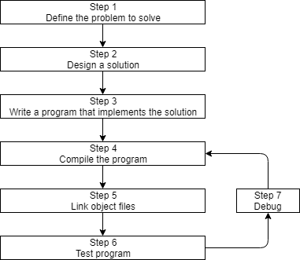

0.4 — C++ 开发简介
在编写和执行第一个 C++ 程序之前，我们需要更详细地了解 C++ 程序的开发过程。下面是一张概述简单方法的图片：

步骤 1：定义你想要解决的问题
这是“做什么”的步骤，你需要弄清楚自己打算解决什么问题。构思编程的初始想法可能是最简单的一步，也可能最难。但从概念上讲，这是最简单的。你只需要一个能被明确定义的想法，就可以进入下一步了。
这里有几个例子：
- “我想写一个程序，能输入很多数字，然后计算平均值。”
- “我想写一个程序，生成一个二维迷宫，让用户在其中导航。如果用户到达终点，就算赢。”
- “我想写一个程序，读取股票价格文件，并预测股票会上涨还是下跌。”
步骤 2：确定你打算如何解决该问题
这是“如何做”的步骤，你需要确定如何解决步骤 1 中提出的问题。这同时也是软件开发中最容易被忽视的步骤。问题的关键在于，解决问题的方法有很多种——但有些是好的，有些是坏的。程序员常常会想到一个主意，然后坐下来立刻开始编写代码。这样往往得出的是坏的那类解决方案。
通常，好的解决方案具有以下特征：
- 它们直接明了（不过于复杂或令人困惑）。
- 它们有良好的文档记录（特别是关于所作的任何假设或限制）。
- 它们是模块化构建的，因此部分内容可以后续重用或更改，而不影响程序的其他部分。
- 当意外情况发生时，它们能优雅地恢复或给出有用的错误消息。
当你坐下来立刻开始编码时，通常你心里想的是“我想做<某事>”，于是你实现的是最快达成目标的解决方案。这可能导致程序脆弱、难以更改或扩展，或者存在大量 bug。 bug 是任何导致程序无法正常运行的编程错误。
顺便说一句……
术语 bug 最初由托马斯·爱迪生在19世纪70年代使用！然而，这个术语在20世纪40年代流行起来，当时工程师们在早期计算机的硬件中发现了一只真正的飞蛾，导致了短路。记录该错误的日志本和那只飞蛾现在都是史密森尼美国历史博物馆的藏品。可以查看 这里。
各种研究表明，在复杂的软件系统中，程序员只有10%-40%的时间花在编写初始程序上。其余60%-90%的时间花在维护上，维护可能包括 调试 （移除错误），为了应对环境变化而进行的更新（例如在新操作系统版本上运行），增强功能（为改善可用性或能力而进行的小改动），或内部改进（以提高可靠性或可维护性）1。
因此，值得你在开始编码之前多花一点时间思考解决问题的最佳方法、你正在做出的假设以及如何为未来做计划，以便在后续过程中节省大量时间和麻烦。
我们将在未来的课程中更多地讨论如何有效地设计问题解决方案。
第3步：编写程序
为了编写程序，我们需要两样东西：首先，我们需要编程语言的知识——这就是这些教程的目的！其次，我们需要一个文本编辑器来编写和保存我们的C++程序。我们输入到文本编辑器中的一组C++指令被称为程序的 源代码 （通常简称为 代码）。你可以使用任何你想要的文本编辑器来编写程序，甚至像Windows的记事本或Unix的vi或pico这样简单的工具也可以。
在基本文本编辑器中输入的程序看起来像这样：
#include <iostream>
int main()
{
std::cout << "Here is some text.";
return 0;
}
然而，我们强烈建议你使用专为编程设计的编辑器（称为 代码编辑器）。如果你还没有，不用担心。我们很快就会介绍如何安装代码编辑器。
典型的编码编辑器具有一些使编程更轻松的功能，包括：
- 行号。当编译器给出错误时，行号很有用，因为典型的编译器错误会显示： 一些错误代码/消息，第64行如果没有显示行号的编辑器，找到第64行会非常麻烦。
- 语法高亮与着色。语法高亮与着色会改变程序各个部分的颜色，使其更容易识别程序的不同组件。
- 一种清晰明确、等宽字体（通常称为“等宽字体”）。非编程字体常常难以区分数字0和字母O，或者数字1、小写字母l和大写字母I。好的编程字体能确保这些符号在视觉上有所区分，以免意外混淆。所有代码编辑器默认都应启用此功能，但标准文本编辑器可能没有。使用等宽字体（所有符号宽度相同）更易于正确格式化和对齐代码。
以下是一个带有行号、语法高亮和等宽字体的C++程序示例：
#include <iostream>
int main()
{
std::cout << "Here is some text.";
return 0;
}
注意这与未高亮版本相比理解起来容易得多。本教程中展示的源代码将同时包含行号和语法高亮，以便读者更易理解。
进阶读者
由于源代码使用ASCII字符编写，编程语言会采用一定量的ASCII艺术来表示数学概念。例如， ≠ 不属于ASCII字符集，因此编程语言通常使用 != 来表示数学上的不等号。
某些编程字体，例如 Fira Code，使用连字将这种“艺术”重新组合成单个字符。例如，不会显示 !=，而Fira Code会显示 ≠ （使用与双字符版本相同的宽度）。有些人觉得这样更易阅读，另一些人则更倾向于遵循字符本身的字面表现。
许多简单的C++程序只有一个源代码文件，但复杂的C++程序可能有几百甚至几千个源代码文件。
程序中的每个源代码文件都需要保存到磁盘，这意味着每个源代码文件都需要一个文件名。C++对文件命名没有任何要求。然而，事实上的标准是将程序创建的第一个/主要源文件命名为 main.cpp。文件名（main）便于确定哪个是主要的源代码文件，而 .cpp 扩展名表示该文件是C++源代码文件。
有时你可能看到第一个/主要的源代码文件以程序的名字命名（例如 calculator.cpp， poker.cpp）。有时你也可能看到其他扩展名被使用（例如 .cc 或 .cxx)。
最佳实践
命名每个程序中的第一个/主要的源代码文件 main.cpp。这样更容易确定哪个源代码文件是主要的。
一旦你编写了程序，接下来的步骤是将源代码转换为可运行的东西，然后看看它是否有效！我们将在下一课中讨论这些步骤（4-7）。